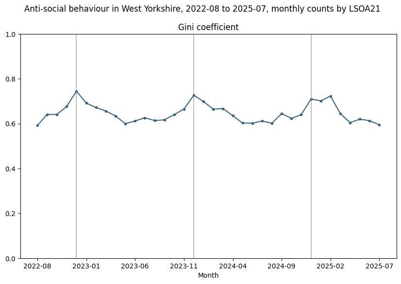

This article describes tooling that has since been superseded. For an up-to-date description see this article
As we're progressing with nationwide and force-specific hotspot determination we have had to reassess some of the
tooling we've been using so far, particularly for presenting and disseminating results, and with a view to producing
practical tools for practitioners and policymakers.
We've started to hit performance limitations with geopandas so are switching a lot of the CPU-intensive spatial code to
use an ephemeral duckdb instance with the
spatial extension. This is exceptionally fast, able
to load 3 years of national crime data (~18m incidents, England & Wales) from over 1500 individual parquet files, and
group the crimes into 200m hex cells (~1.5m) - all in well under 10 seconds.
We've previously used Streamlit as a front-end (see
here) but it's also not scaling well, proving somewhat
inflexible and has compatibility issues with duckdb, so we're looking at alternatives. Later in the project we'll post
a more definitive article on recommendations for the best (python) tooling, but in the meantime we're excited about
the possibilities duckdb enables and want to share some progress...
We demonstrated in part 1 that random data with no structural concentration will exhibit
some concentration using the traditional measures. In this article we taker a deeper dive into this claim.
Recall that our null hypothesis was that crimes are not concentrated, crime is is no more or less likely to occur
in any given spatial unit, and the chance of a crime occurrence is not affected by previous events.
Public crime data in the UK contains precise (but obfuscated) location data, imprecise temporal information (the month
of occurrence) and broad categorical information (around a dozen categories). Taking 3 years of data for incidents of
ASB in West Yorkshire, aggregating crime into spatial units (in this case LSOA) we can plot a graph of (naive) Gini over time.
This graph shows some clear seasonality - concentration increases in the winter and decreases in the summer. A fairly
obvious explanation for this would be that since antisocial behaviour generally occurs outdoors, there are simply more
outdoor gatherings in warmer weather and longer daylight hours, therefore more opportunities.

However, more careful analysis of the data shows the apparent seasonality is an illusion. Here's why...
When we look at crime counts at different spatial scales, it is often useful to try to understand the demographics of
the area. Older people are more likely to be victims of certain crimes, for instance, and for others there are often
correlations between crime incidence and the deprivation, socioeconomic status or other makeup of the area.
The UK census is the biggest source of demographic data, providing many attributes over various spatial scales. With
census data there is always a tradeoff between spatial and categorical resolutions, often to preserve anonymity. For
example, the highest spatial resolution for counts of people by age in years is MSOA, and at higher resolutions
(LSOA, OA) age is only given in 5-year bands.
Another very important consideration is that we will want to aggregate people to non-statistical geographies, such as
grids and hexes. In order to do this, we could simply place people at random points within the statistical geography,
then take those that fall within the new geography. However this can be unrealistic, particularly in areas that are
rural or contain large-scale non-residential infrastructure or bodies of water (despite Monty Python's boasts, nobody
in Yorkshire lives under a lake!).
Crime prevention interventions can be characterised in many different ways. The College of Policing’s Crime Reduction Toolkit and its underpinning EMMIE framework provide a robust approach for assessing what works to reduce crime. But applying that knowledge in practice requires us to think carefully about how specific interventions will interact with the spatial and temporal characteristics of the problems they are intended to address. Understanding not just whether something works, but where, when, and under what conditions, is crucial for matching interventions to the dynamics of crime on the ground.
What constitutes concentration? In these articles we ask:
how do we count crimes? And how do we account for and control for heterogeneity in our observations (units with different area
and populations)?
how do we decide if crime is concentrated? What measures are traditionally used?
if crime is purely random and thus isn't concentrated in any meaningful sense, will we still measure
some concentration using traditional measures?
can we develop a "null hypothesis" statistical model to create a baseline measure, allowing us to differentiate
between random and structural effects? What features must this model have to be realistic?
This post is the first in a short blog series designed to accompany the analyses, documentation and reproducible code developed as part of our Safer Streets project. While the technical outputs are aimed at transparency and reusability, this series provides a more accessible commentary on the why behind the what - why we’re doing what we’re doing, and why it matters for policing and crime prevention practice.
Since its original publication, the demo app mentioned in this article has been replaced with an
evolving multipage app with greater coverage and
functionality. Links in this page have been updated to point to the newer implementation.
This app has been built as a proof-of-concept tool for practitioners and policymakers with an interest in the patterns
of crime concentration, using only publicly available data. It enables users to visualise crime hotspots over time
for a given Police Force Area (PFA).